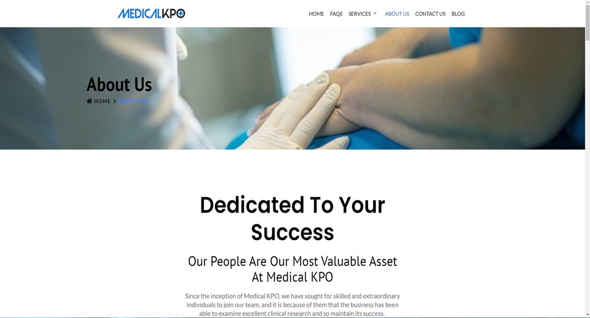
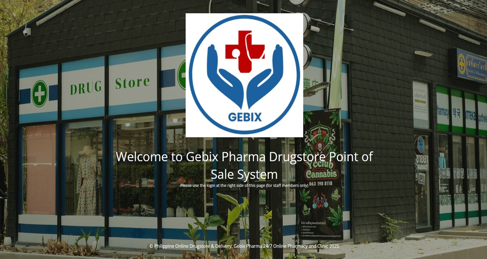
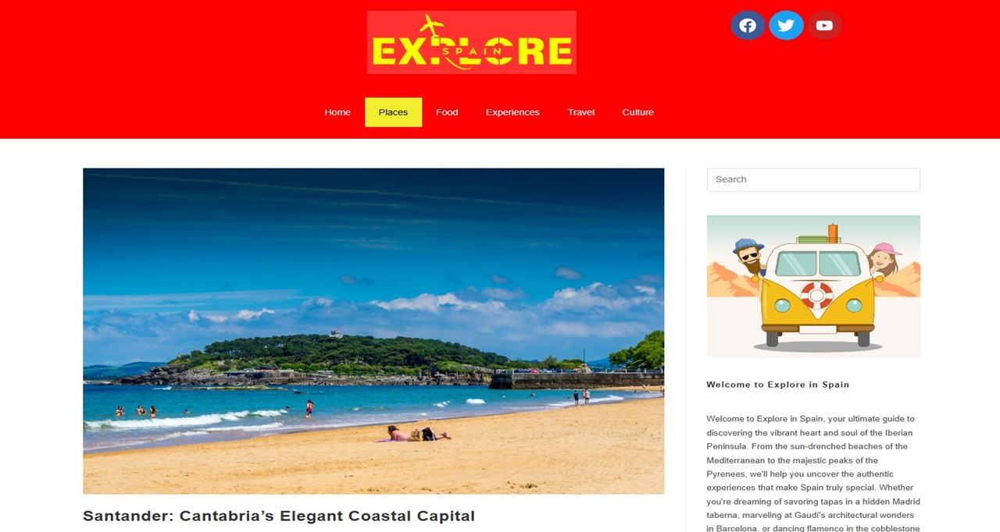
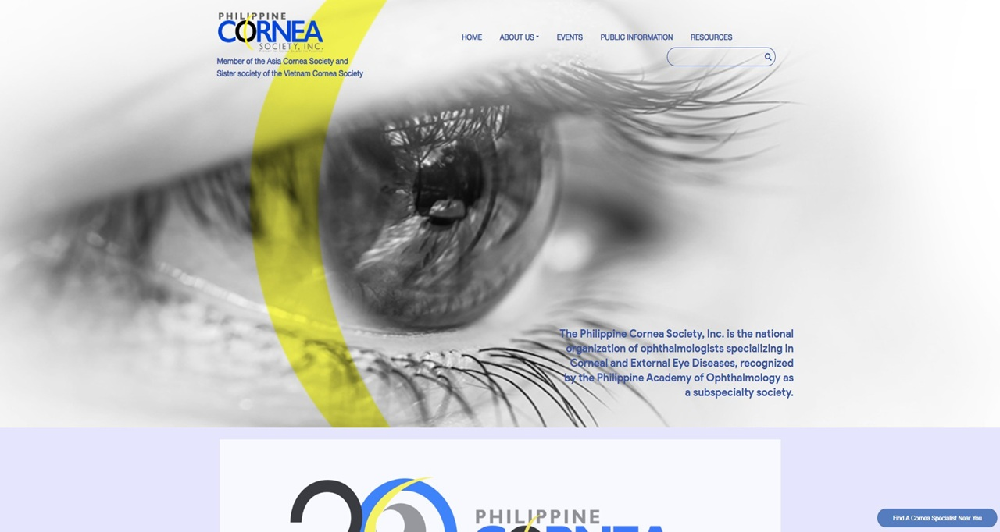
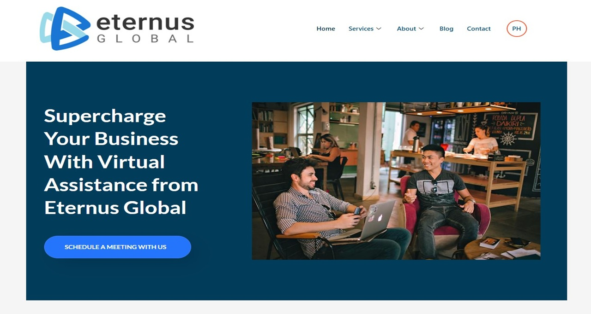

Based inIloilo, PH
Available for select projects
Technical SEO that helps your business get found.
I’m Edilmar — a Technical SEO Specialist, WordPress & Frontend Developer. I find website issues and fix them directly in code, creating fast experiences that are built to rank.
Available for
SEO & web projects
international B2B
& B2C clients
Focused on
Technical SEOWordPress
Frontend
01 — selected work
Built for speed,
search, and people.
From site architecture to the final responsive detail, I turn design direction into practical websites that are easier to discover and easier to use.

01 / Healthcare
Medical KPO
WordPress implementation with a polished corporate layout, clear information hierarchy, and an SEO-ready foundation.
View live site
02 / Ecommerce
Gebix Pharmacy
WooCommerce storefront experience with POS and events functionality.
View live site
03 / Travel
Explore in Spain
Responsive destination content with Elementor and custom CSS refinements.
View live site
04 / Organization
Philippine Cornea Society
Accessible member resources and event content in a responsive WordPress experience.
View live site
05 / Digital Services
Eternus Global
Custom website implementation supporting a project-based junior developer role spanning SEO, frontend, and ongoing technical work.
View live site02 — the approach
Find the issue.
Fix it properly.
I pair practical SEO strategy with hands-on implementation: crawling and indexing, Core Web Vitals, structured data, and frontend work that turns recommendations into measurable site improvements.
My work spans WordPress, WooCommerce, Shopify, Webflow, Elementor, Divi, and Framer — with HTML, CSS, JavaScript, jQuery, PHP, and MySQL where a visual builder needs a real technical solution.
Download my resumeTechnical SEO
Crawlability, indexing, metadata, redirects, internal links, and Core Web Vitals.
Web implementation
Responsive HTML, CSS, JavaScript, WordPress, and page builder development.
Structured data
Schema.org and JSON-LD implementation with validation and testing.
Migration & support
cPanel, DNS, Cloudflare, backups, databases, and secure deployments.
03 — experience
Technical depth,
delivered clearly.
3+ years hands-on15+ client websites
SEO Specialist · Freelance
Researched target keywords and applied them across titles, meta descriptions, headings, and page content. Tracked indexing and keyword performance through Google Search Console and Google Analytics.
Junior Web Developer · Eternus Global BPO OPC
Implemented technical and on-page SEO, built 15+ websites, optimized WooCommerce experiences, managed WordPress databases, and handled hosting, DNS, GA4, and secure site migrations while studying full-time.
04 — credentials
Always learning.
Always building.
Academic work and focused credentials that strengthen the practical, technical work behind every project.
Iloilo State University of Fisheries Science and Technology · Graduated July 2026
Also: Computer Servicing NC II · TESDA05 — get in touch
Let’s make your site
work harder.
Need a technical SEO audit, frontend implementation, or a fast WordPress build? Let’s talk through the next best step.